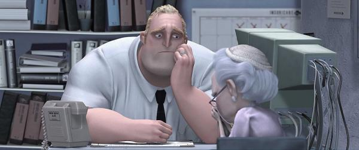
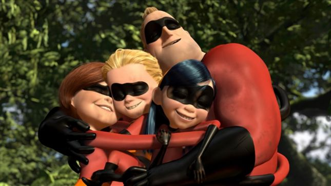

超人特攻隊第一集，劇情從眾多超級英雄在社會中開始打擊犯罪為開頭，然而，這些超級英雄在打擊犯 罪時無意間給周遭市民造成眾多災難和負擔，造成市民的強烈反彈，政府為平息事件只能實施《超級英 雄異地安置計劃》：為他們建造新的身份、住所和工作，讓所有超級英雄以不再當英雄的情況下就此銷 聲匿跡。十五年後，曾經力大無窮的「超能先生」巴鮑伯和「彈力女超人」巴荷莉戀愛結婚後，共同育 有三個子女：巴小倩（Violet）、巴小飛（Dash）和巴小傑（Jack-Jack）；他們各自遺傳到不同的超 能力，也在父母的要求下盡力隱瞞。然而看似平靜的日常生活，有股邪惡勢力正逐漸累積，故事也就此開始。

在超人特攻隊中的劇情安排中，首先以超能先生在平凡生活與英雄心理的拉扯作為引線，表達超能先生 心中那股渴望為這個社會帶來實際改變的心靈與現實生活中不如意的衝突，接著超能先生在發生一些事 件被公司裁員後，碰到名為幻影的女子，表示願意給他一個重登英雄高峰的機會，他必須解決由十五年 前自己的崇拜者巴迪，自稱「辛拉登」所挑起的危機。在解決危機當中，超能先生逐漸了解到遵循自己 內心的聲音活下去的重要性與珍惜身邊親近的人的重要性。
在我們還小，還不懂得這個世界的現實面之前，總是能天馬行空地構思自己的未來，未來是那麼遠大、 那麼美好、那麼無拘無束，就像片中那座充滿英雄的城市一樣，人人能各得其所。然而隨著年齡的增長 ，我們作夢的能力也逐漸喪失，就像片中超能先生向現實社會妥協，被象徵著現實社會的辦公室、制服 、上班族的標準壓得喘不過氣，直到有一次翻轉的機會，也就是幻影的出現，她的出現重燃超能先生潛 藏在心中已久的英雄魂，並帶起了後面一連串令人發人深省的體悟，包含家人與忠於自己的核心思想， 相信這是一部老少咸宜的動畫片，值得大家去觀賞。
